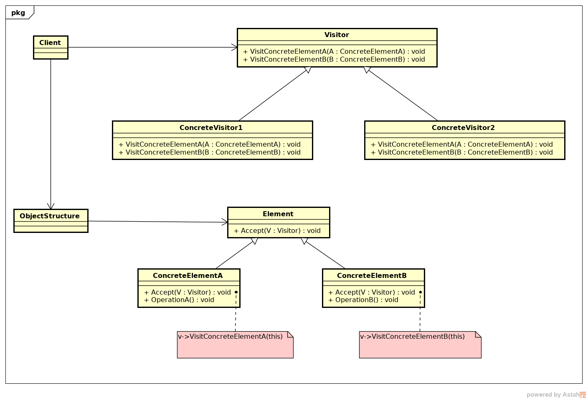

23 - Visitor
Descrição do padrão:
Visitor é um padrão de projeto que representa uma operação a ser executada nos elementos de uma estrutura de objetos. Visitor permite definir uma nova operação sem mudar as classes dos elementos sobre os quais opera.
UML do padrão:
Descrição do exemplo do livro:
A ideia do exemplo apresentado no livro é criar um controle de inventario e custos de produtos (no caso do exemplo, chassis e disquetes). Esse exemplo terá uma classe abstrata Equipment (equipamento) e dela duas classes concretas FloppyDisk e Chassis. Como visitor teremos a abstrata, InventoryVisitor(para contar a quantidade no inventario) e PricingVisitor(para saber o custo final).